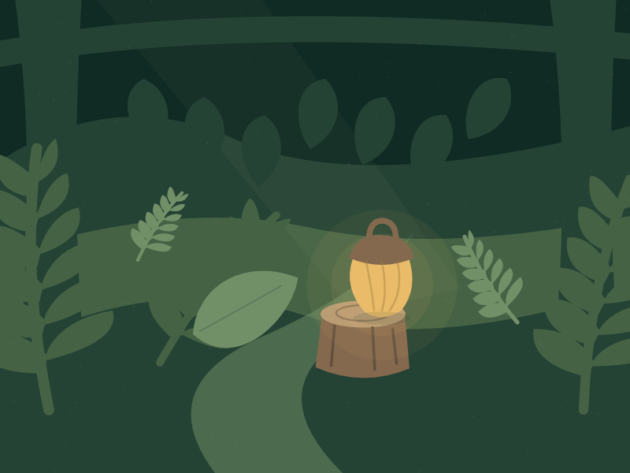

PocketQuest
A quiet adventure on your wrist.
Meet Nib, follow The Lantern Trail and keep the memories you make along the way. PocketQuest is a native Apple Watch adventure with an iPhone companion for browsing, sharing and backup.
Available on the App Store. Apple Watch is required for gameplay.

A trail with a story to tell
Explore 48 illustrated encounters across six regions. Choose how to help at each stop, save your first memory, and return to explore an alternate response without spending or earning another reward.
Welcome six residents, collect twelve decorations and six postcards, arrange three home slots and discover three Nib forms as your bond grows.
Quiet days belong here too
Your first two visits are free. Later first visits cost Trail Sparks. Camp offers three untimed activities with a 10-Spark gift from each activity once per campaign day. Camp works without Motion permission and can fund every unlocked encounter over time.
If you choose to allow Motion access, eligible steps recorded by the owning Watch can earn Sparks when available movement history refreshes. Movement is optional. Nib never loses bond because you rest or miss a day, and PocketQuest sets no exercise targets.
One permanent full-game unlock
The first region is free. A single nonconsumable purchase opens regions 2–6. Apple displays the current localized price before you buy. There is no subscription, paid Spark currency or random paid reward. Earned memories and collection items stay saved if purchase access changes.
The adventure lives on your Watch
The Watch makes story choices, spends Sparks and arranges your home. The iPhone shows a dated copy of your adventure, with Atlas, Collection and Journal views, card sharing and backup tools. It cannot play or decorate remotely.
Story and artwork are bundled. No custom account, ads, tracking SDK or developer backend is required. Purchases use Apple’s StoreKit. Read the privacy policy for details about movement, paired copies and files you choose to share.